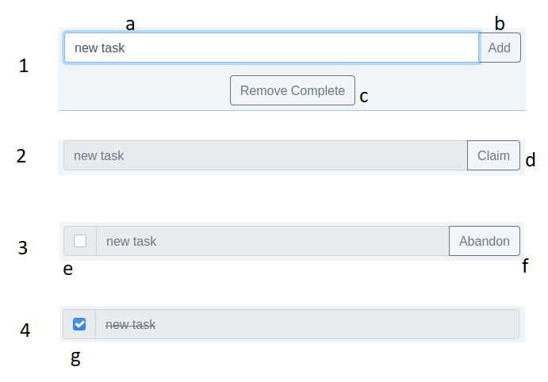

This lab introduces jQuery, a JavaScript library which makes writing JavaScript code, particularly involving DOM operations, much faster. In particular it handles things like DOM traversal and manipulation, event handling and animations. Additionally, jQuery acts as an introduction to JavaScript libraries, of which many exist, so that you can understand the process of finding, integrating and using a JavaScript library.
Lab 5: jQuery
ENSE 374 - Software Engineering Management - Laboratory
University of Regina - Engineering and Applied Science - Software Systems Engineering
Lab Instructor: Adam Tilson
Computer running Windows, MacOS or Linux, with an Intel or AMD-based processor (x86 or x86-64) with administrator privileges.
- A modern web browser, with a strong preference for Firefox or Chrome
- A text editor, preferably VS Code
Why use jQuery
jQuery can simplify JavaScript DOM operations using shortcuts:
- finding elements with the query selector
- adding event listeners
-
changing css
- Makes common things you do faster / easier
- Because we don’t like typing!
Is it Worth Learning in 2021
- Debatable.
- For small projects, it may be better to exclude it for performance
- For bigger projects, it may be better to use something like a FrameWork (Vue, React or Angular)
- Just this year BootStrap dropped it as a dependency in favour of vanilla JavaScript
How do we get it
You can get JQuery from the CDN!
- Google has a good one that will likely be cached in many people’s browsers:
Where to add the link:
jQuery, like other JavaScript, is bottom of the HTML
- Add it before the closing </body> tag, before your custom JavaScript.
- Your browser reads HTML top to bottom, so we want to know about jQuery functionality before running our own scripts
Where can I get help?
The official docs are not bad: jQuery API
This cheat sheet is quite useful: Cheat Sheet
Main Entry
- Create a JavaScript file, link it in the HTML (After the jQuery link), and add the following:
in index.html…
<!-- ... -->
<script src="https://ajax.googleapis.com/ajax/libs/jquery/3.6.0/jquery.min.js"></script>
<script src="script.js"></script>
</body>
</html>
in script.js…
$(document).ready( () => {
//...
});
- Recall this is callback syntax with an anonymous function being called when the document is ready
“Minify”ed Libraries
- If you try to read jQuery code, it’s gonna be illegible. Why?
- Minifying.
- Removes all whitespace (which is for humans, not computers) so that we pass less data over the network.
- The same thing happens with Bootstrap (min).
- If you want to read the code, you need to find a non-min version of the library.
Selection is the core operation of jQuery
- Selection rules are the same as
querySelectorAll- Recall this is the same as CSS selectors
- the basic selection function is:
$("...")
e.g.
let myId = $( "#my-id" );
let myClass = $( ".my-class" );
let firstNameInput = $( "input[name='first-name']" );
What’s with the $ (dollar sign)?
In JavaScript, it’s legal to use $ as a variable name. It is used as an alias for jQuery.
- You could, instead, use
jQueryeverywhere for more readable code, though that defeats the purpose of jQuery! - Theoretically (but unlikely) there could be conflicts with other frameworks using this variable.
Cascading
Recall from last week we can cascade function calls. This is the intended usage of jQuery, rather than storing things in variables where possible:
$( "#my-div" ).text( "Some new text" );
Adding elements
before, after -> before or after an elements, outside the tag
prepend, append -> first or last thing inside the element tag
$( "h1" ).before( "<button>new</button>" )
<h1> Hello World </h1>
^ ^ ^ ^
before prepend append after
Removing elements
$( "element" ).remove();
.css("property", "value")
- uses strings so it avoids all the awful kebab-case to camelCase nonsense we saw last week
- If a single argument is used, it is acts as a getter.
- If two arguments are used, it acts as a setting
Finding a variable and setting css:
let p = $( "p" );
p.css( "background-color", "#986D8E" );
More common, we use cascading rather than saving things in a temp variable:
$( "p" ).css( "background-color", "#986D8E" );
CSS Separation of Concern
Recall last week Tutorial
- it’s a bad move to do CSS styles through JS / DOM,
- it makes more sense just to change classes
Instead use functions:
$( "p" ).hasClass( "big-title" )
$( "p" ).addClass( "big-title" )
$( "p" ).removeClass( "big-title" )
Setting text
Rather than DOM innerText, it’s just text
$( "h1" ).text( "Bye" );
Similarly, rather than InnerHTML, in jQuery it’s HTML
Manipulating Attributes
getter:
$( "img" ).attr( "src" )
setter:
$( "img" ).attr( "src", "https://www.google.com" )
Adding event listeners
$( "h1" ).click( () => {
// ...
});
Adding KeyPress listeners
To an element…
$( "input" ).keypress( ( e ) => {
// ...
});
To a document…
$( document ).keypress( ( e ) => {
console.log ( e.code );
});
Adding other listeners
$( "h1" ).on( "mouseover" , () => {
$( "h1" ).css( "color", "purple") ;
});
Part 7: Animating with jQuery
- jQuery lets you animate over CSS properties
- You start at one position and end at another
- This is called “tweening”
- Only works with numeric values, with the exceptions of show, hide and toggle
$("button").click(function(){
$("button").animate({width: "500px"});
});
$( "element" ).hide(); // will hide an element, i.e. display: none
$( "element" ).show();
$( "element" ).toggle();
$( "element" ).fadeOut(); // like hide, but less jarring
$( "element" ).fadeIn();
$( "element" ).fadeToggle();
$( "element" ).slideUp(); // another type of hiding. Up => Hide, Down => Show, Toggle
$( "element" ).animate( /*the CSS rule we want to tween to*/ );
animateonly works for numeric properties - it’s hard to tween to things like colors
You can chain animations:
$( "element" ).slideUp().SlideDown().animate({ /*...*/ });
- animations will play in order, left to right
In this lab we come back to the lab project. Recall, the end goal is to create a collaborative to-do list. For now, we are going to simulate the a single users’ interactivity using JavaScript, jQuery and DOM manipulations. Later, you will replace much of this functionality with server-side Node.js code. This lab will be primarily JavaScript / jQuery, but you can modify as needed your HTML, CSS, Bootstrap, and JavaScript.

Non-persistent interactivity
Using JavaScript / jQuery DOM manipulation, add the following functionality to the todo page:
- When the user enters text and clicks the add task button, create and add an unclaimed task to the task list
- Ensure the task text matches the textbox content
- Experiment with jQuery animations for adding the new task
- Ensure the task properly transitions through the following states (for one user):
unclaimed->claimed but unfinished(Claim button)claimed but unfinished->unclaimed(Abandon)claimed but unfinished->finished(Checkbox to checked)finished->claimed but unfinished(Checkbox to unchecked)
- Finally, when the user clicks remove complete, remove all of the completed tasks
- Experiment with jQuery animations for removing completed tasks
Interaction is further described by the following diagram:

- when the user enters a new task (a) and presses button (b), a new task is created as in 2.
- When the user presses the claim button (d), the task is transformed into state 3.
- when the user clicks the abandon button (f), the task returns to state 2.
- when the user clicks the checkbox (e), the task transitions to state 4
- when the user unclicks the checkbox (g), the task transitions back to state 3
-
When the user clicks remove complete (c), all of the completed tasks (state 4) are removed
- Note: You may now remove the old template tasks from the previous labs, but make sure you have a backup of the code for a future lab! *
Submission
Please submit to URCourses by the due date.